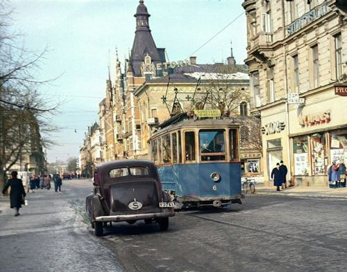
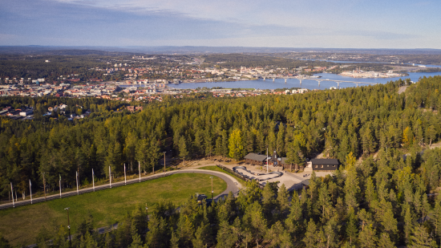
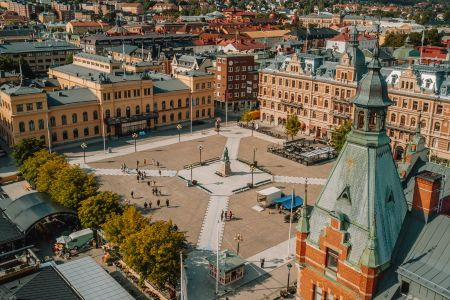
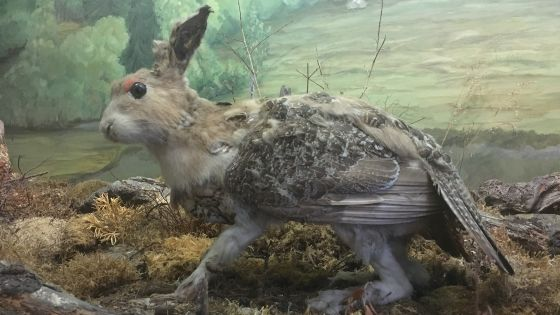
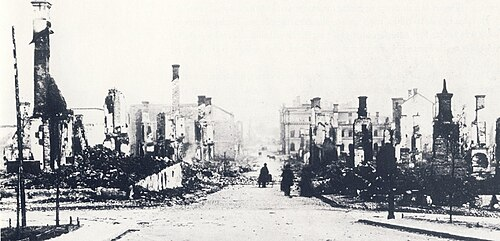

Sundsvall
Stad i södra Norrland som grundades 23 augusti 1621 av Gustav II Adolf.
Mittuniversitetet ligger beläget i Åkroken där Sundsvall grundades en
gång i tiden.
Invånarantalet är i dagsläget 99 018 i Sundsvall kommun
varav ca 58-60 000 bor i tätorten Sundsvall.

Det går inte att beskriva Sundsvall utan att nämna Stenstan, stadskärnan.
Här finns shopping, ett fantastiskt restaurangutbud och mysiga caféer.
Här finns också en fascinerande historia.
Det hela började med Sundsvallsbranden, 1888,
som var förödande och förstörde stora delar av Sundsvalls innerstad.
Ur askan reste sig
en ny stad byggd i sten för att förhindra nya bränder, därav namnet Stenstan.
Stenstan
är än idag det mest renodlade exemplet på en 1890-talsstad i Sverige där historiska byggnader,
med påkostade exteriörer och fantasifulla detaljer, ger dig något nytt att upptäcka varje gång
du lyfter blicken.
Staden omges av berg och på varsin sida belägnas Norra och Södra
berget som präglas av kultur och natur.
Sveriges enda aluminiumsmältverk Kubal finns vid Sundsvalls infart som ett landmärke innan man
åker över
en av Sveriges längsta broar, Sundsvallsbron (2109 m)
Största privata arbetsgivare är SCA med sin starka koppling till sågverkstiden och träpatronerna. Sca äger Tunadals sågverk i Sundsvall, som är ett av Sveriges största och mest produktiva sågverk, och det enda kvarvarande från Sundsvalls stora sågverksepok. Flera statliga myndigheter har också sitt säte i Sundsvall såsom CSN, SPV och Bolagsverket.
Norra berget och Södra berget

Sundsvalls friluftsmuseum är ett av Destination Sundsvalls mest populära
besöksmål och en plats för lek, lärande, rekreation och upplevelser
året om. Här finns bland annat historiska byggnader, odlingar, lantrasdjur,
grillplatser, butiker, caféer, restaurang och vandrarhem. Friluftsmuseet
är
beläget på Norra stadsberget 1,5 kilometers promenadväg eller
2,5 kilometers
bilväg nordväst om Stenstan. Här finns även ett utsiktstorn,
fäbodvall,
Hantverks- och sjöfartsmuseum med den uppstoppade Skvadern,
Södra berget når 240 meter över havet och ligger syd-sydöst om
Sundsvalls centrum,
söder om stadsdelen Skönsmon. På toppen finns
den 216 m höga TV-masten Stadsbergetmasten
och Hotell Södra Berget,
som erbjuder milsvid utsikt över Sundsvall och här kan du njuta av spa,
mat i toppklass och krispiga lakan att somna gott i. Här finns längdskidåkning
i toppklass, slalom på
två anläggningar, Sidsjöbacken och Sundsvalls slalombacke och
mysiga grillplatser för avslappning och
umgänge.Här genomfördes en
slalomdeltävling i världscupen i alpin skidåkning 1992.
Universitet
I Sundsvall finns Mittuniversitet som har vuxit fram ur flera
tidigare högskolor
och blev ett fullvärdigt universitet år 2005.
Idag har universitetet campus i Sundsvall
och Östersund och erbjuder
program och kurser inom många ämnesgrupper.
Stora Torget

Stora torget är det centrala området i Stenstaden och omges av Sundsvalls
mest välkända byggnader.
Mitt i torget står statyn av Gustav II Adolf, som
grundade Sundsvall år 1621. Stora torget är stadens
viktigaste mötesplats som
omges av pampiga stenhus som byggdes efter den stora branden.
Här finns allt från
torghandel, butiker, restauranger och hotell.
Hotell Knaust är ett av Sundsvalls berömda hotell
som grundades år 1891 av Adolf Fredrik Knaust. Här ägnade
flottningsinspektorn Håkan Dahlmark åt att
berätta jakthistorier och skrönor.
En av historierna handlade om att han hade skjutit en så kallad
”Skvader” under en
jakt i Lunde skog. Skvader är ett fabeldjur med framdel av en hare och en bakdel
en tjäder.
Den blev så småningom en tavla och därefter en uppstoppad version och har sedan dess varit
utställd på
Fornminnesföreningens museum på Norra Berget i Sundsvall. Ytterligare exemplar finns på
Biologiska museet
på Djurgården i Stockholm, och i herrföreningen Skvaderns ägo på Norrlands nation
i Uppsala. Senare har skvader
kommit att bli en allmän benämning för en märklig eller mindre
lyckad kombination.

Sundsvallsbranden

Sundsvallsbranden ägde rum den 25 juni år 1888 och kom att bli den största stadsbranden i Sveriges historia och den tredje i Sundsvalls historia. Vädret var varmt, torrt och blåsigt, som var en stor faktor till brandens hastiga spridning. Orsaken till branden är inte helt säkert men det tros att vara en gnista från ett fartyg som blåste på land som satte igång branden.